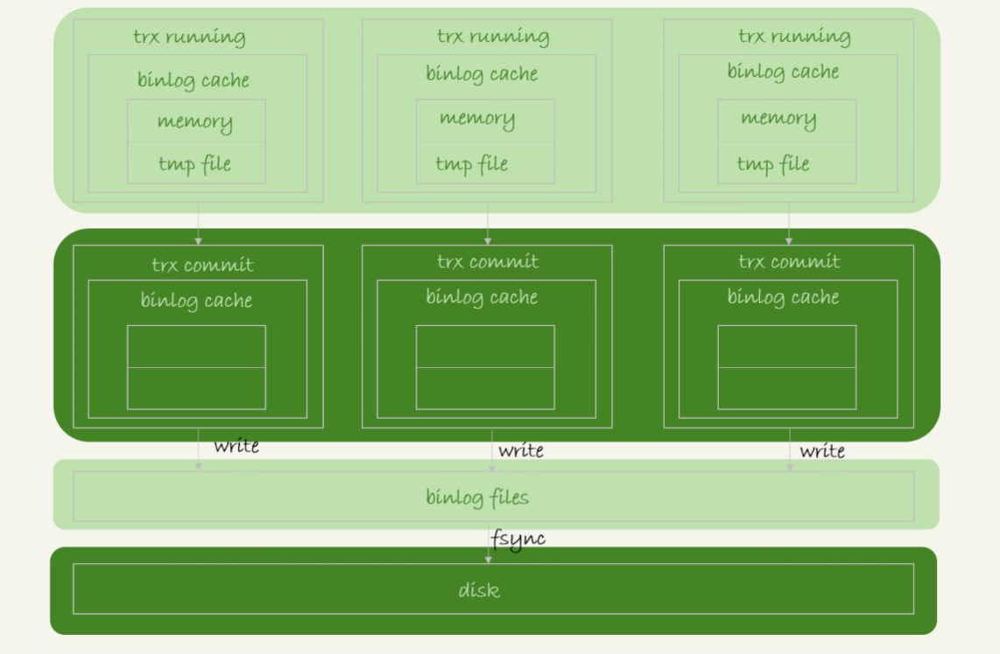

show variables like '%wait_timeout%' 单位秒，默认8小时怎么解决长连接导致内存占用过大问题
是innodb引擎层的日志
WAL(write ahead logging)技术
刷脏页策略如何控制
思考？
为什么有了redo log还需要binlog, 谈一下你对这两种日志的理解，以及它们的区别？
思考
怎么让数据库恢复到半个月内任意一秒状态？
日志为啥需要"二阶段提交"？(1 prepare阶段 2 写binlog 3 commit)
什么场景需要用到binlog和redo log来恢复数据?
事务特性(ACID)
多个事务同时执行可能出现的问题
隔离级别
如何查看事务的隔离级别
show variables like 'transaction-isolation';RR级别的隔离如何解决幻读
for update 添加排他锁，当前读，也就是写锁begin, start transaction
rollback
commit
set autocommit=0 关闭自动提交事务，减少显示设置开启事务
修改事务的隔离级别
set global transaction isolation level read committed;begin/start transaction 并不是事务的起点，一致性快照的起点
start transaction with consistent snapshot在mysql有"两个"视图的概念
回滚日志（undo log）
多版本并不是物理上真实存在的，而是通过undo log计算出来的
可重复读的隔离级别定义
事务的可重复读能力是怎么实现的？
读提交与可重复读的逻辑类似，主要区别
思考
回滚日志什么时候删除?
怎么看innodb中的长事务？对系统的危害有哪些？
如何避免系统的长事务？
应用端思考
从数据库端思考
为啥表结构没有可重复读？
hash表，适合等值查询，不适合区间查询
有序数组，等值查询与范围查询都很优秀，添加数据要移动数组，且空间有限
二叉搜索树，
跳表(skiplist)，增加向前指针的链表(多级索引)，随机化数据结构，可以进行二分查找的有序链表
LSM树，使用顺序写代替随机写来提高性能，与此同时微弱降低读性能
B+树索引模型
主键索引与普通索引的查询有啥不同？
维护索引数据的有序性
not null primary key auto_increment业务字段做主键问题
页分裂
页合并
select * from t1 where k between 3 and 5
如何避免回表查询
最左前缀原则
索引下推
思考？
什么场景适合用业务字段来表示主键
Innodb为什么要用B+树来进行索引
没有主键索引建普通索引，Innodb是如何进行查询
锁的目的
锁分类
对数据库整个实例加锁
flush tables with read lock (让数据库只读)unlock tables (解除数据库的全局锁)官方的mysqldump对数据进行备份，如何保证数据的一致性
为啥不使用 set global readonly=true 来设置只读
分两种
表锁语法
MDL不显示使用
如何给你查询频繁的表添加字段
alter table t1 nowait/wait n add column二阶段锁
Innodb死锁的产生，如何解决死锁问题
由于两个事务之间资源循环依赖，涉及的线程都在等待别的线程资源释放，导致死锁的产生
两种策略解决死锁
死锁检测原理
回滚原理
怎么解决热点数据更新导致的性能问题？
select * from t where k = 5;普通索引
唯一索引
当需要数据更新的时候
在下次访问数据页的时候(merge操作)
什么情况下会触发merge操作(将change buffer的数据应用到原始数据页)
change buffer主要为了解决什么问题
什么情况下可以使用change buffer?
某次写使用了change buffer机制，之后主机异常，是否会造成change buffer数据丢失？
merge的执行流程如何？会把数据写回磁盘？
优化器选择索引的逻辑
扫描的行数(扫描行数越少->访问磁盘越少->消耗cpu越少)
根据统计信息估算记录数，也就是"区分度"，不同的值越多，区分度越高
查看索引的基数 show index from t4; "cardinality"
通过采样统计来确定
两种存储索引统计的方式，通过innodb_stats_persistent来设置
优化器还要考虑索引回表查询的代价
analyze table t4 可以用来重新统计索引信息是否使用临时表(内存不够，使用基于磁盘的临时表)
是否进行排序
explain select * from t4 where a between 1 and 1000 and b between 50000 and 100000 order by b limit 1; 使用索引b, 而不是索引a使用force index 强行选择索引
explain select * from t4 force index(a) where a between 1 and 1000 and b between 50000 and 100000 order by b limit 1;修改sql, 使其命中我们期望的索引
explain select * from t4 where a between 1 and 1000 and b between 50000 and 100000 order by b,a limit 1;explain select * from (select * from t4 where (a between 1 and 1000) and (b between 50000 and 100000) order by b limit 100)alias limit 1;新建更适合的索引，来提供给优化器做选择，或删掉误用的索引
使用索引的原则
索引创建的使用场景
脏页/干净页的理解
innodb在什么情况下，会触发刷脏(flush)过程？
明显影响性能的情况？
缓冲池中内存的三种状态
读取申请内存不够的淘汰策略
show variables like '%innodb_io_capacity%'
innodb刷盘速度参考因素
innodb_max_dirty_pages_pct 默认75%查看innodb的脏比
select VARIABLE_VALUE into @a from performance_schema.global_status where VARIABLE_NAME = 'Innodb_buffer_pool_pages_dirty'; select VARIABLE_VALUE into @b from performance_schema.global_status where VARIABLE_NAME = 'Innodb_buffer_pool_pages_total'; select @a/@b;innodb连刷机制
show variables like '%innodb_flush_neighbors%';WAL技术
mysql的innodb表包含部分
innodb_file_per_table用来控制表数据存在共享表空间，也可以单独的文件
OFF表示，表数据放在系统共享表空间，也就是跟数据字典放一起
ON表示，每个Innodb表数据存储在一个.idb为后缀的文件（建议）
如果删掉一条记录R4
如果删掉整个数据页上的所有记录
相邻两个数据页利用率，页合并操作
如果使用delete删除数据
重建表
alter table A engine=Innodb重建表的时候，往临时表插入数据，旧表又有数据写入如何解决？
tmp_table是由server创建的,alter table t engine=innodb,ALGORITHM=copy;
tmp_file 是由innodb创建的，整个ddl都在innodb内部完成，是一种原地操作
tmp_file alter table t engine=innodb,ALGORITHM=inplace;
给innodb添加全文索引字段过程
alter table t add fulltext(file_name);进行收缩表，结果占用空间更大
innodb与myisam实现的原理
innodb 需要把数据一行一行地从引擎里面读出来，然后累积记数
Myisam引擎把表的总行数存在磁盘上
innodb引擎为什么不存储多少行数据，方便查询
innodb扫描行的优化
show table status 的行数是估算出来的
思路： 找一个地方，记录表的行数
redis缓存起来
找一个额外表存储起来
count(*)、count(主键)、count(1)表示返回满足条件的结果集总行数
count(字段)，表示满足条件，参数"字段"不为null的总个数
执行效率
mysql怎么知道binlog是完整的
redo log 与 binlog是怎么串联起来的
处于 prepare 阶段的 redo log 加上完整 binlog，重启就能恢复，MySQL 为什么要这么设计?
为什么需要二阶段提交？干脆先 redo log 写完，再写 binlog。崩溃恢复的时候，必须得两个日志都完整才可以。是不是一样的逻辑？
只保留binlog可以吗？
只有redo log可以吗？
redo log一般要设置多大？
正常运行中的实例，数据写入后的最终落盘，是从 redo log 更新过来的还是从 buffer pool 更新过来的呢？
redo log buffer 是什么？是先修改内存，还是先写 redo log 文件？
select name,city,age from t5 where city="hangzhou" order by name limit 100的执行流程
sort_buffer
show variables like '%sort_buffer_size%';怎么判断排序是否使用了临时文件
单行数据很大，返回的数据量很大，一直使用临时文件，
mysql对单行长度太大的优化
选择原理
alter table t5 add index city_name_age(city, name, age); 联合索引，减少回表查询using index 表示使用了覆盖索引，减少了回表查询select * from t where city in ('杭州',"苏州") order by name limit 100; 会有排序过程吗
如果维护一个数据库端排序的方案，不需要额外排序
select word from words order by rand() limit 3 Using temporary(使用临时表); Using filesort(需要排序)
show variables like '%slow_query_log%'; 查看慢日志看扫描的行数没有主键如何回表
删掉主键，mysql会自己生成一个长度为6字节的rowid来作为主键
排序过程中rowid的来历，标识数据行的信息
总结order by rand()
什么时候会使用
show variables like '%tmp_table_size%';internal_tmp_dist_storage_engine控制为什么临时文件排序使用优先队列排序？而不是归并排序算法
优先队列排序算法
思路1
思路2
取三个值的随机算法
思路3
select * from words where id >= (select floor(rand()*(select max(id) from words))) order by id limit 10;select count(*) from trade_log where month(t_modified)=7 t_modified上有索引
select * from words where id-1=999; 索引失效select "10">9 如果等于1,说明字符串转成了int, 否则int转成了字符串
explain select * from tradelog where tradeid=3423422 tradeid有索引且类型为varchar(32)
select * from tradelog where CAST(tradid AS signed int) = 110717;关联表，一个是utf8, 一个是utf8mb4
select * from trade_detail where tradeid=$L2.tradeid.value;
select * from trade_detail where CONVERT(traideid USING utf8mb4)=$L2.tradeid.value;如果解决字符串转换问题
100万数据的表，有一个b字段，int(10), 其中等于1234567890的数据有10万条
select * from t where b ="1234567890abcd"; 这个查询的执行流程，会走索引吗？查询长时间不返回
show processlist 查看waiting for table metadata lockflush表的动作
flush tables words with read lock; 和 flush tables with read lock;产生阻塞的流程
select sleep(1) from words; 默认要执行10万秒flush tables words 需要关闭查询对象，就需要等待上一个结束，因此会阻塞select * from words where id =1 也会被阻塞，被flush命令阻塞show processlist 会出现 waiting for table flush场景复现
begin; update words set word="adad" where id =1;select * from words where id=1 lock in share mode;如果解决
show processlist; kill query processlist_id;没有索引，只是一条条扫描
select * from t where c=50000 limit 1;回滚日志太多，导致查询时间差的问题
update words set c=c+1 where id=1;select * from words where id =1; 会执行10次的回滚日志，所以比较耗时 select * from words where id =1 lock in share mode;lock in share mode 表示当前读，会直接读到结果不需要执行回滚日志概念
lock in share mode思考题？
select * from t where c= 5 for update; 会等待行锁释放之后，返回查询结果select * from t where c=5 for update nowait 不等待，直接提示锁冲突，不返回结果select * from t where c=5 for update wait 5 等待5秒，如果行锁仍未释放，则提示行锁冲突，不返回结果select * from t where c=5 for update skip locked 直接返回结果，忽略行锁记录一个事务在前后两次查询同一范围的时候，后一次查询看到前一次查询没有看到的行
间隙锁（Gap lock）只有在rr隔离级别下才生效
select * from t where d=5 for update背后的逻辑
间隙锁和行锁合成 next-key lock
读锁/写锁
间隙锁(gap lock)
rc模式，binlog_format=row组合为啥要这样用
即使给所有的行加锁也解决不了幻读的影响
行锁确实比较直观，判断规则也相对简单，间隙锁的引入会影响系统的并发度，也增加了锁分析的复杂度
5.x-5.7.24, 8.0-8.0.13版本中的情况


短连接模型存在的风险
select * from information_schema.processlist;kill id; 即可删掉连接处理的方式
第一种：先处理掉那些占着连接但是不工作的线程 kill id
第二种：减少连接过程的消耗
索引没有设计好
修改索引执行 alter table语句
理解做法：
sql语句没有写好
select * from t where id+1=1000; 修改sqlmysql选错索引
业务突然出现高峰，或者应用程序bug, 导致某个语句qps突然暴涨
重要结论
写入逻辑
binlog cache
show variables like '%binlog_cache_size%' 查看大小
分析
write 和 fsync的时机，由参数 show variables like '%sync_binlog%'; 控制
性能优化
三种状态分析
控制redo log 的写策略
show variables like '%innodb_flush_log_at_trx_commint%';额外场景，将一个没有提交的事务redo log写入到磁盘
show variables like '%innodb_log_buffer_size%'; 的一半时候，后台线程会主动写盘目的
参数控制
show variables like '%binlog_group_commit_sync_delay%'; 表示延迟多少微妙之后才调用fsyncshow variables like '%binlog_group_commit_sync_no_delay_count 表示积累多少次以后才调用性能优化点
mysql性能IO上的优化
sync_binlog 参数，多次才进行一次fsync，丢失binloginnodb_flush_log_at_trx_commit参数，每次事务都不进行fsync, 丢失binlog执行update语句，使用hexdump 命令查看ibd文件内容，没有看到数据的改变
为什么binlog cache事每个线程自己维护，redo log buffer是全局共用？
事务执行期间，还没到提交阶段，如果发生crash, redo log肯定丢了，这会不会导致主备不一致？
如果binlog写盘以后发生crash, 这时候还没给客户端答复就重启了，等客户端再重连进来，发现事务已提交成功了，这是不是bug?
不是
实际上数据库crash-safe保证的是
你生产设置的"双1"吗？如果平时，你有什么场景改成过"非双1"吗？你的这种操作又基于决定？
set innodb_flush_logs_at_trx_commit=2; set sync_binlog=2
分析流程
change master命令，设置主库IP、端口、账号、密码，以及从那个位置开始请求binlog(文件名，偏移量)start slave命令，会启动io_thread、sql_thread线程，其中io线程与主库建立连接set binlog_format=statement; 记录sql语句的原文
mysql-> show binlog events in 'binlog.000001;
mysqlbinlog binlog.000001 --base64-output=decode-rows -v | more
set binlog_format=row; 记录真实操作的数据
set binlog_format=mixed 混合格式，两种都存在
如果解析binlog日志内容发生给mysql
mysqlbinlog binlog.000001 --start-position=2738 --stop-position=2973 | mysql -h127.0.0.1 -P13000 -u$user -p$pwd;分析，节点A与节点B互为主从，切换时，binlog是否会被不断循环执行
延迟的可能情况
如果查看主从延迟时间
从库执行 show slave status 其中 seconds_behind_master 表示当前从库延迟了多少秒
seconds_behind_master的计算方法
从库机器的性能要比主库所在的机器性能差
备库压力大
从库提供读能力，备运营使用，导致消耗大量cpu资源，影响主备延迟
解决方案
大事务
备库的并行复制能力

切换流程
注意事项
代价：可能造成数据不一致性
binlog_format=mixed的场景
binlog_format=row的场景

因为 row 格式在记录 binlog 的时候，会记录新插入的行的所有字段值，所以最后只会有一行不一致。而且，两边的主备同步的应用线程会报错 duplicate key error 并停止。也就是说，这种情况下，备库 B 的 (5,4) 和主库 A 的 (5,5) 这两行数据，都不会被对方执行。
结论
建议优先选择可靠性优先策略
运维系统
show slave status 采集 seconds_behind_master值
worker数量如何控制
show variables like '%slave_parallel_workers%'; 一般为机器的1/4-1/2核coordinator在分发任务应遵循的原则
mysql5.6
mariaDB的并行策略
利用redo log的组提交优化
实现的流程
存在的问题
mysql5.7
show variables like '%slave-parallel-type%';
并行的核心思想【针对前面的优化】
mysql5.7.22
commit_order
writeset
writeset_session
主库单线程插入很多数据，过了3小时候，我们要搭建主库，为了尽快追上主库，要开并行复制，你如何选择策略
查看策略
show variables like '%binlog-transaction-dependency-tracking';的策略 commit_order, writeset, writeset_session分析
分析
change master命令CHANGE MASTER TO MASTER_HOST=$host_name
MASTER_PORT=$port
MASTER_USER=$user_name
MASTER_PASSWORD=$password
MASTER_LOG_FILE=$master_log_name
MASTER_LOG_POS=$master_log_pos由于B是A的从库，本地记录的是A的位置，但相同的日志，A的位点和A'的位点不同，切换时，如果找到同步位点
show master status命令，得到当前A'最新的file和position主从切换时，遇到错误如何处理
主动跳过一个事务
set global sql_slave_skip_counter=1;statrt slave; 跳过制定的错误
set slave_skip_errors=1032,1062
常见的两种错误
解析
如果解决找到同步位点的问题
设置全局事务ID(global transaction identifier), 在一个事务提交的时候生成，是这个事务的唯一标识
格式
gtid模式启动
gtid的两种生成方式
gtid_next=automatic 代表使用默认值
gtid_next='current_gtid'
执行命令
CHANGE MASTER TO
MASTER_HOST=$host_name
MASTER_PORT=$port
MASTER_USER=$user_name
MASTER_PASSWORD=$password
master_auto_position=1主从同步的逻辑 (set_a表示实例A'的GTID集合，set_b表示实例B的GTID集合)
实例 B 指定主库 A’，基于主备协议建立连接。
实例B把set_b发送给A'
实例A'算出的set_a与set_b的差集，判断A'本地是否包含了这个差集需要的所有binlog事务
之后就从这个事务开始，往后读文件，按顺序取binlog发送给B去执行
设计思想
在GTID模式下，从库执行start slave, 发现主库需要的binlog被删掉，导致主备创建不成功，应如果处理？
客户端直连
proxy架构

主从延迟的解决方案
问题
问题
第一种，先判断 show slave status 中 seconds_behind_master 是否已经等于0
第二种，对比位点确保主备无延迟
第三种，对比GTID集合确保主备无延迟
思考

备库还没有收到日志的状态，出现过期读
主要解决binlog发送同步的问题
设计思路
一主多从同步的问题
一主多从，只要等到一个从库的ack，就开始给客户端返回确认
业务高峰期，主库的位点或GTID集合更新很快，两个位点等值判断就会一直不成立，很有可能从库上迟迟无法响应查询请求的情况


命令介绍
从库执行 select master_pos_wait(file, pos[, timeout]);
参数file 和pos指的是主库上文件名和位置
timeout可选，设为正整数N，表示函数最多等待N秒
具体执行流程
show master status 得到当前主库执行到的 File 和 Position；select master_pos_wait(File, Position, 1);不允许过期读的要求，需做好限流策略
命令介绍
select wait_for_executed_gtid_set(gtid_set, 1);执行流程
trx1 事务更新完成后，从返回包直接获取这个事务的 GTID，记为 gtid1；
show master status 选定一个从库执行查询语句；
在从库上执行 select wait_for_executed_gtid_set(gtid1, 1)；
如果返回值是 0，则在这个从库执行查询语句；
否则，到主库执行查询语句。
如果在更新完事务之后，让返回的包能取到这个事务的GTID?
set session_track_gtids=OWN_GTID使用GTID等位点方案做读写分离，在对大表做DDL的时候会怎样？